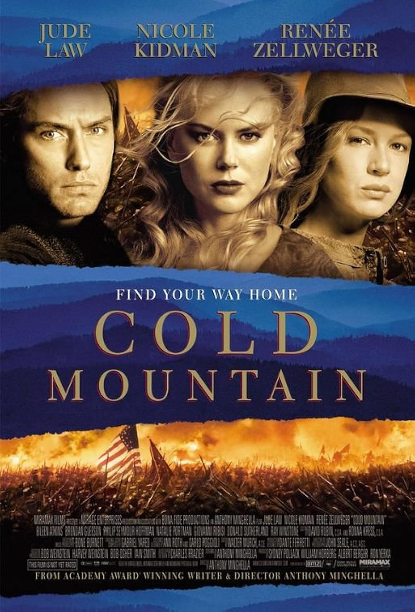

Cold Mountain
76th Academy Awards
(Oscars 2004)
7 Nominations, 1 Award
| Nominations | ||
|---|---|---|
| Category | Nominees | Result |
| Actor in a Leading Role | Jude Law | Nominated |
| Actress in a Supporting Role | Renée Zellweger | Won |
| Cinematography | John Seale | Nominated |
| Film Editing | Walter Murch | Nominated |
| Music (Original Score) | Gabriel Yared | Nominated |
| Music (Original Song) "Scarlet Tide" |
Elvis Costello and T Bone Burnett | Nominated |
| Music (Original Song) "You Will Be My Ain True Love" |
Sting | Nominated |